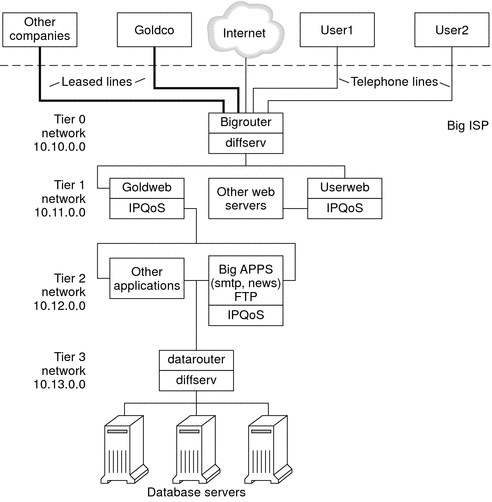

|
|||
|
1. Solaris TCPIP Protocol Suite (Overview) 2. Planning an IPv4 Addressing Scheme (Tasks 3. Planning an IPv6 Addressing Scheme (Overview) 4. Planning an IPv6 Network (Tasks) 5. Configuring TCP/IP Network Services and IPv4 Addressing (Tasks) 6. Administering Network Interfaces (Tasks) 7. Enabling IPv6 on a Network (Tasks) 8. Administering a TCP/IP Network (Tasks) 9. Troubleshooting Network Problems (Tasks) 10. TCP/IP and IPv4 in Depth (Reference) 12. About Solaris DHCP (Overview) 13. Planning for DHCP Service (Tasks) 14. Configuring the DHCP Service (Tasks) 15. Administering DHCP (Tasks) 16. Configuring and Administering DHCP Clients 17. Troubleshooting DHCP (Reference) 18. DHCP Commands and Files (Reference) 19. IP Security Architecture (Overview) 21. IP Security Architecture (Reference) 22. Internet Key Exchange (Overview) 24. Internet Key Exchange (Reference) 25. Solaris IP Filter (Overview) 28. Administering Mobile IP (Tasks) 29. Mobile IP Files and Commands (Reference) 30. Introducing IPMP (Overview) 31. Administering IPMP (Tasks) Part VI IP Quality of Service (IPQoS) 32. Introducing IPQoS (Overview) 33. Planning for an IPQoS-Enabled Network (Tasks) General IPQoS Configuration Planning (Task Map) Planning the Diffserv Network Topology Planning the Quality-of-Service Policy How to Prepare a Network for IPQoS How to Define the Classes for Your QoS Policy How to Define Filters in the QoS Policy How to Plan Forwarding Behavior How to Plan for Flow Accounting 34. Creating the IPQoS Configuration File (Tasks) 35. Starting and Maintaining IPQoS (Tasks) 36. Using Flow Accounting and Statistics Gathering (Tasks) |
Introducing the IPQoS Configuration ExampleTasks in the remaining chapters of the guide use the example IPQoS configuration that is introduced in this section. The example shows the differentiated services solution on the public intranet of BigISP, a fictitious service provider. BigISP offers services to large companies that reach BigISP through leased lines. Individuals who dial in from modems can also buy services from BigISP. IPQoS TopologyThe following figure shows the network topology that is used for BigISP's public intranet. Figure 33-4 IPQoS Example TopologyBigISP has implemented these four tiers in its public intranet:
|
||
|